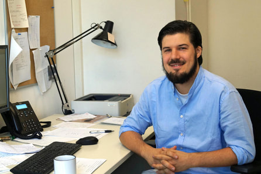
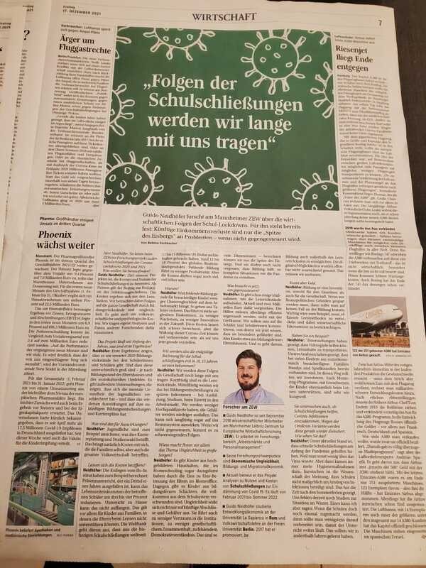

Economics · Education · Social mobility
Guido Neidhöfer
Welcome to my Homepage!
I am tenured Senior Researcher at ZEW - Leibniz Centre for European Economic Research and currently DAAD-Professor of Economics at the Turkish-German University in Istanbul.

I did my PhD in Economics at Freie Universität Berlin in the Doctoral Programme "Public Economics & Inequality". My main research interests are Applied Microeconometrics, Education, Labour, and Development Economics.
In June 2023 I have been awarded the Italian National Scientific Habilitation (ASN) as associate professor in Economics (Economia Politica 13/A1), Economic Policy (Politica Economica 13/A2), Public Economics (Scienza delle Finanze 13/A3), and Econometrics (Econometria 13/A5) by the Italian Ministry for Education, University and Research (MIUR).
I am also steering committee member of the College for Interdisciplinary Educational Research, affiliated researcher at the Center for distributive, labor, and social studies at University of La Plata and the Center of Studies for Human Development at Universidad de San Andres, and visiting fellow at the International Inequality Institute, London School of Economics and Political Science. I hold a Jacobs Foundation Research Fellowship for the period 2023-2025.
Since October 2020 I am managing editor at the Journal of Income Distribution.
In June 2023 I have been awarded the Italian National Scientific Habilitation (ASN) as associate professor in Economics (Economia Politica 13/A1), Economic Policy (Politica Economica 13/A2), Public Economics (Scienza delle Finanze 13/A3), and Econometrics (Econometria 13/A5) by the Italian Ministry for Education, University and Research (MIUR).
I am also steering committee member of the College for Interdisciplinary Educational Research, affiliated researcher at the Center for distributive, labor, and social studies at University of La Plata and the Center of Studies for Human Development at Universidad de San Andres, and visiting fellow at the International Inequality Institute, London School of Economics and Political Science. I hold a Jacobs Foundation Research Fellowship for the period 2023-2025.
Since October 2020 I am managing editor at the Journal of Income Distribution.
"The economist asking how education impacts equality - Guido Neidhöfer is showing how all children benefit from a more just society" (interview published in BOLD)

Interview published in Mannheimer Morgen about the costs of school closures (17.12.2021)

The magazine of the Hans-Böckler-Foundation Mitbestimmung published a very nice article about my career. My thanks and appreciation to the Foundation for these wonderful years.
Download mitbestimmung neidhoefer.pdf ↗
Download mitbestimmung august 2019.pdf ↗
image source (top of the site): campus.leben https://www.fu-berlin.de/campusleben/forschen/2016/1610xx-guido-neidhoefer/index.html